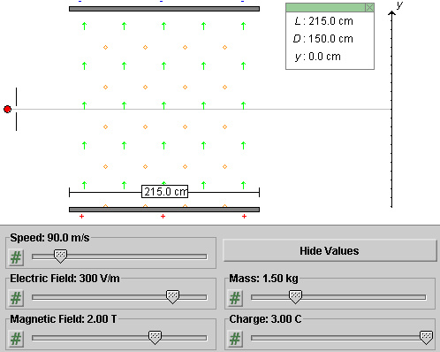
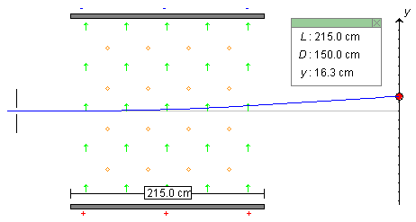
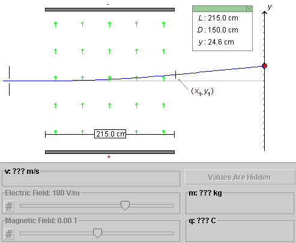
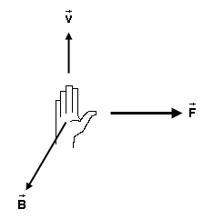

Prerequisites
Students should be familiar with the concepts of electric and magnetic field, the forces exerted by such fields on a charged particle, and with Newton's second law and projectile motion.
Learning Outcomes
Students will develop an understanding of how combined electric and magnetic fields can affect the motion of charged particles and will come to understand the operation of a velocity selector. They will gain experience in applying the equations of projectile motion in a somewhat more complicated situation. They will learn how J.J. Thomson was able in 1897 to measure the ratio of charge/mass for the cathode ray particles he was observing.
Instructions
Students should know how the applet functions, as described in Help and ShowMe.
The applet should be open. The step-by-step instructions in the following text are to be done in the applet. You may need to toggle back and forth between instructions and applet if your screen space is limited.
 Determining the Speed With Crossed
Electric and Magnetic Fields
Determining the Speed With Crossed
Electric and Magnetic Fields
 Determining the Charge/Mass
Ratio
Determining the Charge/Mass
Ratio
 Appendix
Appendix
 Equations For Motion
With Constant Acceleration
Equations For Motion
With Constant Acceleration
Task 1. Click Reset. Adjust the width of the capacitor, the strengths of the electric and magnetic fields, and the speed, mass, and charge of the particle as in Figure 1 below.

Figure 1
Task 2. Continuing from Task 1, click Hide Values to hide the values of the speed, mass, and charge.
In the following sections, try to pretend you don't know the values you have set. This corresponds to the situation that would confront you in a laboratory and that confronted Thomson. Your task will be to determine the speed and the ratio of charge/mass. (It is not possible with the apparatus to determine separate values for the charge and the mass.)
The next section will deal with the determination of the speed.

In the following it will be assumed that you are continuing directly from the preceding section, i.e., that the values of v, m, and q are hidden. Your goal in this section will be to determine the speed of the charged particle.
In order to be able to describe the experimental conditions, we need to define an x,y,z coordinate system. Let the x-axis be horizontal and to the right. The y-axis is defined as in Figure 1 above. To have a right-handed system, the z-axis must then be perpendicular to the applet window pointing towards the viewer.
The following Tasks 1 to 3 and the subsequent Question 1 take you through the theory underlying the measurement of the speed. In all three Tasks and Question 1, it is assumed that we are dealing with a charged particle of charge q and mass m that, at the moment under consideration, is moving in the positive x-direction with speed v.
Task 1. Given an electric field in the y-direction with y-component Ey, what is the force exerted by this field on the particle? Describe the direction of the force and write down an expression for the non-zero force component using symbols.
Task 2. Given a magnetic field in the z-direction with z-component Bz, what is the force exerted by this field on the particle? Describe the direction of the force and write down an expression for the non-zero force component using symbols.
Task 3. Given both an electric field in the y-direction with y-component Ey and a magnetic field in the z-direction with z-component Bz, what is the net force exerted on the particle? Describe the direction of the net force and write down expressions for all non-zero force components using symbols.
Answers. The force exerted by the electric field on the particle is in the y-direction, as is the field. The y-component Fy,el of the force is equal to
Fy,el = q Ey .
 (1)
(1)
Both q and Ey can be either positive or negative. Expression (1) will automatically produce the correct sign for Fy,el in all cases.
The direction of the force exerted by the magnetic field on
the particle is given by the right-hand rule. The Appendix
contains a review of the right-hand rule. When  is in the positive
x-direction and
is in the positive
x-direction and  in the positive z-direction, the
force is in the negative y-direction if q is
positive. The following expression for the
y-component Fy,magn of the force
is consistent with this
in the positive z-direction, the
force is in the negative y-direction if q is
positive. The following expression for the
y-component Fy,magn of the force
is consistent with this
Fy,magn = -qvBz
.  (2)
(2)
Both q and Bz can be either positive or negative. Expression (2) will automatically produce the correct sign for Fy,magn in all cases.
Since both the electric and magnetic forces are in the y-direction, the net force is also. Its y-component is the sum of the two forces in Equations (1) and (2),
Fy = Fy,el +
Fy,magn = q(Ey -
vBz) .  (3)
(3)
The x and z components of all forces are zero.
Question 1. For a given speed v, how can one choose Ey and Bz so that the particle goes through the the fields without change in velocity, i.e., without being deflected?
Answer. For the particle to go through the fields without a change in velocity, the net force on the particle must be zero. Therefore, the expression in parentheses on the right-hand side of Equation (3) must be zero. Equ.(3) is derived assuming the particle is moving in the x-direction. If no force is acting on the particle, it will continue to move in the x-direction and Equ.(3) will be true at all points along the particle's straight path.
Solving for v this gives the condition
v = Ey / Bz .
 (4)
(4)
When Equation (4) is satisfied, there will be no deflection of the particle.
Exercise 1. Determine the particle's speed by determining the electric and magnetic field for which the particle passes through the crossed fields without deflection. Use Equ.(4).
First observe the particle's deflection for the field settings shown in Figure 1 above, i.e., Ey = 300 V/m and Bz = 2.00 T. You should be able to observe a particle path as in the following Figure 2. The particle is deflected upward and hits the screen at y = 16.3 cm.

Figure 2
Keep the magnetic field fixed, lower the electric field, and Play the motion again. You should be able to find an electric field for which the particle hits the screen at y = 0.
Answer. You should find that for Ey = 180 V/m and Bz = 2.00 T there is no deflection. Remember that the particle's speed was set to 90 m/s initially. With Ey = 180 V/m and Bz = 2.00 T, Equ.(4) does give this value.
Exercise 2. Rewind the applet and set the two fields to a different pair of values, but with the same ratio Ey / Bz. Play the motion again, and check if the motion is undeflected for this pair of values as well.
Comment 1. An arrangement like here with a crossed (perpendicular) pair of uniform electric and magnetic fields is called a velocity selector. If charged particles with a variety of velocities enter the crossed fields, only those whose whose velocity is perpendicular to both fields and whose speed satisfies Equ.(4) will continue in a straight line. The set-up is therefore able to select charged particles of a given velocity from all other particles by setting the fields to appropriate values. Velocity selectors have an application in mass spectrometers.
The arrangement can also be used to measure the speed of charged particles. One has to adjust the electric and magnetic fields until there is no deflection and then use Equ.(4).
Comment 2. According to Equ.(4), the value of the speed for which there is no deflection depends on neither the charge nor the mass of the particle. Therefore, one can use a velocity selector to measure the speed of charged particles even if one does not know their charge or their mass.
Suppose you have determined in this manner that the speed of the particle is 90 m/s. How can you determine the charge/mass ratio of the particle? The next section will answer this question.
It is assumed that the values of v, m, and q are still hidden and have the values set initially in the first section of the Lesson.
In the preceding section, the speed of the particle was found to be 90 m/s. In this section, we perform a second experiment on the particle. In the second experiment, the particle goes through the same apparatus, but with the magnetic field turned off. This time the particle will be deflected because there is no magnetic force to balance the electric force.
Throughout this section, it is assumed that the magnetic field between the capacitor plates is zero so that there is only a non-zero uniform electric field.
The y component of this field will be taken to have the value Ey = 180 V/m, and we know from the preceding section that the charged particle enters the capacitor horizontally from the left with speed v = 90 m/s.
For the purpose of being able to illustrate the general method with numbers, we will need to recall that the charge q and mass m of the particle are 3.00 C and 1.50 kg, respectively. However, the method to be described does not require knowledge of these values. The apparatus parameters L and D have the values indicated in the Data box in Figure 3 below.
Question 1. A particle leaves the region of non-zero field at the point (x1,y1) illustrated in Figure 3 below. From that point onward, until it hits the observation screen, the particle travels in a field-free region with constant velocity.

Figure 3
What is the value of y1?
Answer. This is an exercise in projectile motion. Projectile motion is motion in two dimensions with constant acceleration. The motion has constant acceleration because, according to Equ.(1) above, the particle experiences a constant upward force between the plates. By Newton's second law of motion, this implies a constant upward acceleration. The equations of constant acceleration are listed in the Appendix.
Since the velocity component in the x-direction, vx, is constant, the time interval (Δt)1 required to travel through the capacitor is
(Δt)1 =
L / vx = (2.15 m) / (90 m/s) =
0.023888... s.  (5)
(5)
The y-component of the particle's acceleration, using Newton's second law together with force expression (1), is equal to
ay = Fy,el / m =
(q/m)Ey =
(3.00/1.50)×180 = 360 m/s2 . (6)
(6)
The vertical displacement y1 during the time interval (Dt)1 is then equal to
y1 =
(1/2)ay(Δt)
12 =
(1/2)×360×0.023882 = 0.1027 m =
10.27 cm. (7)
(7)
Question 2. What is the value of the y-component vy of the particle's velocity at point (x1,y1)?
Answer. Using value (5) for the time interval (Δt)1, (vy)1 is equal to
(vy)1 =
ay(Δt)1 = 360×0.02388
= 8.600 m/s . (8)
(8)
Question 3. What is the time interval (Δt)2 required for the particle to travel with constant velocity from point (x1,y1) to the screen?
Answer. Since the horizontal velocity component vx still has the constant value of 90 m/s, the time required is
(Δt)2 =
D / vx = (1.50 m) / (90 m/s) =
0.01666... s.  (9)
(9)
Question 4. What is the vertical displacement Δy of the particle during the time interval (Dt)2?
Answer. Since the y-component of velocity is constant and given by Equ.(8), Δy is equal to
Δy = (vy)1
(Δt)2 = 8.60×0.0166 = 0.1433 m =
14.33 cm . (10)
(10)
Question 5. What is the total vertical deflection y of the particle when it hits the screen?
Answer. The total deflection is the sum of the deflections upon traversing the region between the capacitor plates and the field-free region beyond. Thus,
y = y1 + Δy = 10.27 +
14.33 = 24.6 cm . (11)
(11)
Exercise 1. Run the motion with the applet settings described at the beginning of the section and verify Result (11). You should obtain the path illustrated in Figure 3 above.
Task 1. Repeat the numerical calculations performed in Eqs.(5) to (11) above with symbols so that you end up with an expression for the deflection y in terms of q, m, Ey, v, L, and D.
Solution. Compare the numerical calculations in Eqs.(5) to (11) above to the symbolic calculations in Eqs.(12) to (18) below.
The velocity component in the x-direction, vx, is constant throughout the motion and equal to the incoming speed v of the particle. Thus, the symbol v will be used everywhere in place of vx.
The time interval (Δt)1 required to travel through the capacitor is
(Δt)1 =
L / v.  (12)
(12)
Between the capacitor plates, the y-component of the particle's acceleration, using Newton's second law together with force expression (1), is equal to
ay = Fy,el / m =
(qEy) / m. (13)
(13)
The vertical displacement y1 while the particle is moving through the capacitor is equal to
y1 =
(1/2)ay(Δt)
12 = (qEy /
2m) (L / v)2. (14)
(14)
The y-component vy of the particle's velocity at point (x1,y1) is equal to
(vy)1 =
ay(Δt)1 =
(qEy / m) (L /
v). (15)
(15)
The time interval (Δt)2 required for the particle to travel with constant velocity from point (x1,y1) to the observation screen is equal to
(Δt)2 =
D / v .  (16)
(16)
The vertical displacement Δy of the particle during the time interval (Δt)2 is equal to
Δy =
(vy)1 (Δt)2 =
(qEy / m) (LD /
v2) . (17)
(17)
The total vertical deflection y of the particle when it hits the screen is equal to
y = y1 + <Δy = (qEy /
mv2) (L2/2 +
LD). (18)
(18)
Exercise 2. Substitute the applet settings described at the beginning of the section into the right-hand side of Equation (18) and verify Result (11).
Task 2. Equ.(18) gives the deflection y of the particles on the observation screen in terms of the charge/mass ratio. What we need in an experiment designed to measure the charge/mass ratio is the reverse: an equation that expresses the unknown q/m in terms of the observed deflection y and all the other measurable parameters.
Show that when Equ.(18) is solved for q/m one gets the result
q/m = y v2 / [
Ey(L2/2 + LD) ]
. (19)
(19)
Exercise 3. Substitute the measured values listed below into the right-hand side of Equ.(19) and verify that the equation gives the correct charge/mass ratio: q/m = 3.00/1.50 = 2.00 C/kg.
Measured values:
Make sure you convert all data to SI-units before inserting them into Equ.(19).
>>>>> Appendix <<<<<

Figure A1
Axes and Components. In the following equations for the motion of a particle with constant acceleration it is assumed that an x,y coordinate system has been chosen and that the particle has the same acceleration everywhere, with constant x and y components ax and ay.
Sign Changes. In the diagram in Figure A1 above, the direction of the acceleration vector is such that both the x and y components of the vector are positive. In another situation, the direction of the vector may be different, so that one or both of the x and y components may be negative. (Or the direction of the vector may be as shown, but the directions of the x and y axes may have been chosen differently, again causing one or both components of the vector to be negative.) The equations below apply to all such situations. No signs in these equations need to be changed.
2D vs. 1D. The following equations are formulated for the 2D case, motion in two dimensions. However, they also apply to 1D motion, motion along a straight line. In this case, it will often be convenient to choose either the x or y axis to be along the line of motion. Assuming the motion is along the x axis, you will need only the equations for the x components. All y components in any of the equations will be zero. Similarly, if the motion is restricted to the y-axis, just use the y equations and ignore the x equations.
Acceleration, Velocity, and Position vs. Time:
| x components | y components | |
| Acceleration | ax = const | ay = const |
| Velocity | vx(t) = vx(0) + axt | vy(t) = vy(0) + ayt |
| Position | x(t) = x(0) + vx(0)t + (ax/2)t2 | y(t) = y(0) + vy(0)t + (ay/2) t2 |
Table 1
In vector notation, the equations for the x and y components of velocity can be combined into a single equation,
(t) =
(0) +  t.
t.  (A1)
(A1)
Similarly, the equations for the x and y position coordinates can be combined into one vector equation,
 (t) =
(0) + (0)t + (/2)
t2.
(t) =
(0) + (0)t + (/2)
t2.  (A2)
(A2)
Here,
denotes the position vector whose components are (x,
y).
Introducing the displacement vector  (t) from the start of the motion
at time t = 0 to time t which is equal to
the change in the position vector,
(t) from the start of the motion
at time t = 0 to time t which is equal to
the change in the position vector,
(t) =
(t) -
(0),  (A3)
(A3)
Equ.(A2) can be rewritten as
(t) = (0)t +
(/2)
t2.  (A4)
(A4)
Speed vs. Displacement:
Δv2 =
v2(t) - v2(0) =
2axΔx +
2ayΔy
For 1D motion, say, along the x axis, the speed vs. displacement relation reduces to
Δv2 =
v2(t) - v2(0) =
2axΔx =
2ax[x(t) - x(0)] .
 (A7)
(A7)
The direction of the force exerted on a positively charged
particle moving with velocity in a magnetic field can be visualized by means of the following
right-hand rule. (There are several right-hand rules for
this purpose. Here, the following one is suggested.) The
rule is illustrated in Figure A2 below.

Figure A2
The force is normal (perpendicular) to the plane spanned by
vectors and
.
The only question is: "Along which normal is it?" There is one normal sticking out of one side of a plane and another normal sticking out on the other side. The right-hand rule illustrated in Figure A2 lets you decide which normal it is.
Hold your right hand flat with outstretched fingers in the
direction of the velocity and with the thumb pointing off to one side
in a direction perpendicular to the plane spanned by
and
. There
are two such directions in which the thumb could point.
Which is the right one?
The right direction for the thumb is the one in which your
palm faces in the direction of vector . When you curl the fingers
of your right hand, they should curl towards . The thumb will
then be pointing in the direction of the magnetic force
 .
.
If your palm faces in the wrong direction, rotate your hand
by 180o around the axis that points along the
outstretched fingers. E.g., if were into the screen rather than
out of the screen, with as
in Figures A1 and A2, the palm would have to be turned by
180o to be facing in the direction of
and
the thumb and the force would be to the left rather than to the
right.